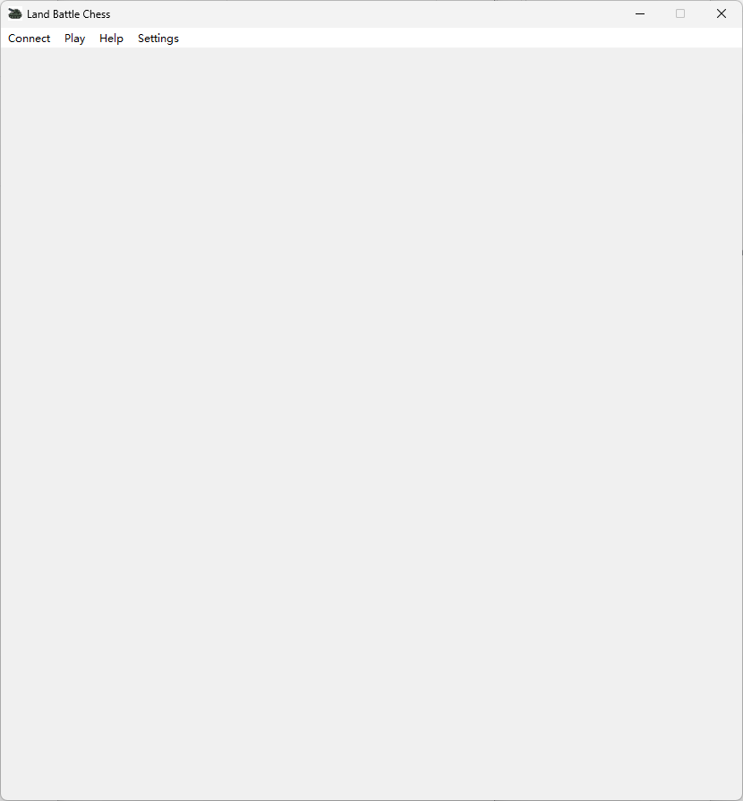
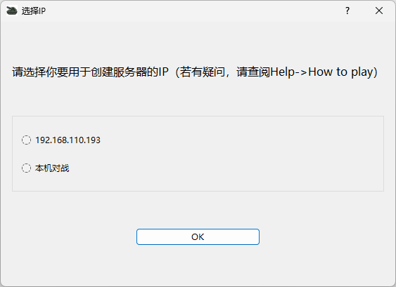
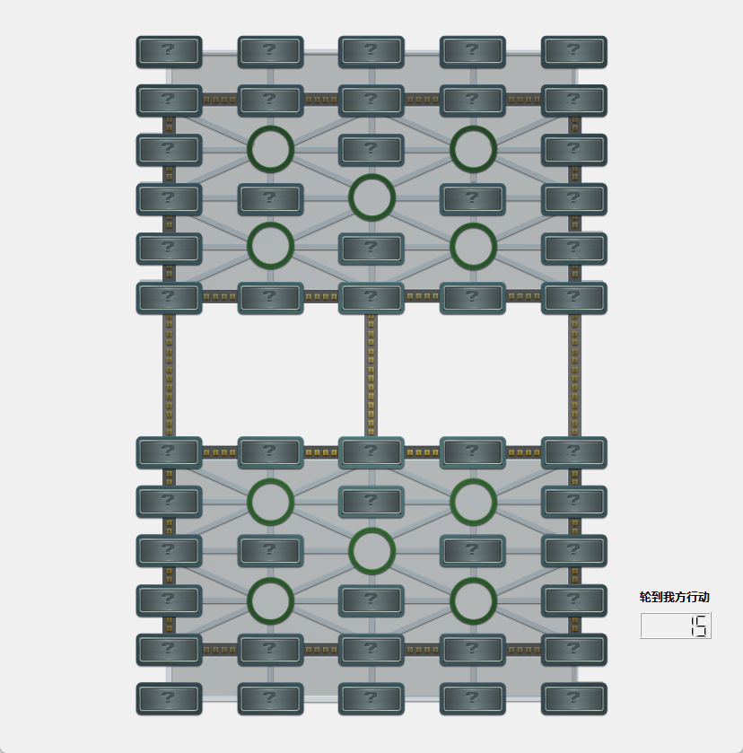
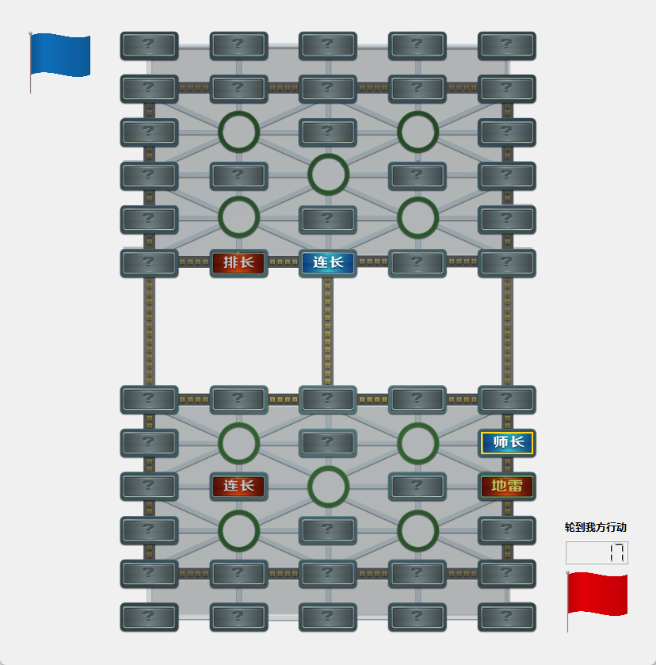
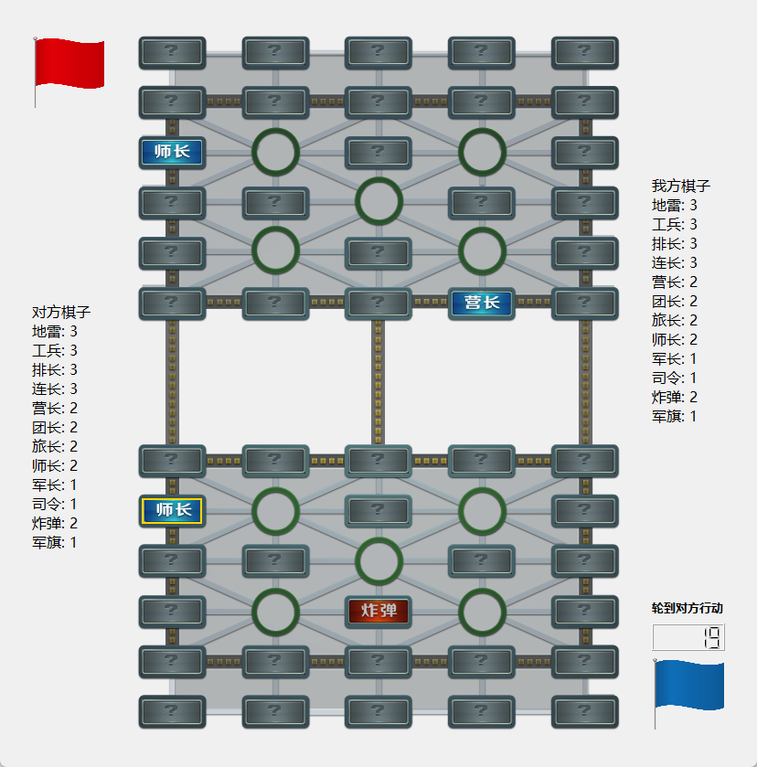
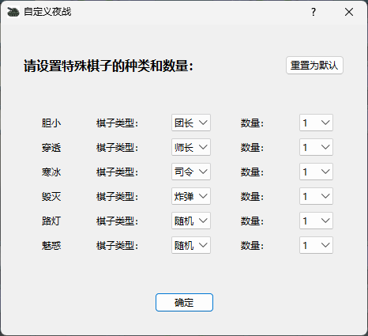
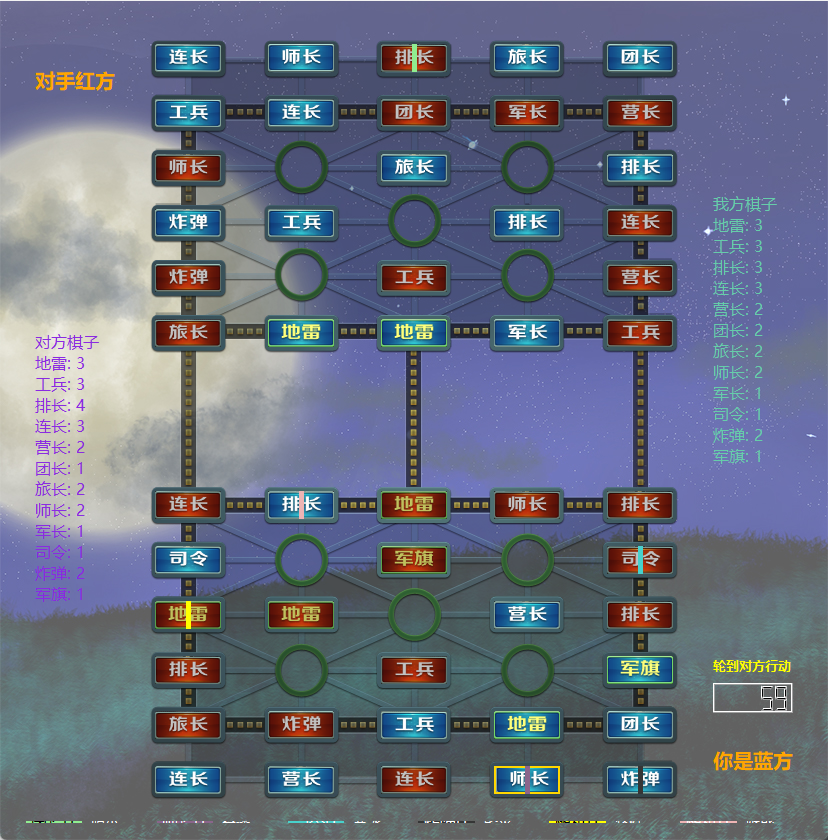

How to Start a Game
Step-by-step guide for creating a room, connecting players, and starting a match.
After launching the game, you will see the following interface.

From Help, you can open the help page (in Chinese, but its content is entirely a subset of this tutorial website). Settings allows you to toggle sound on or off.
To start a game, you must first create a room. To do so, the server must have a public IP address, or both players must be in the same local network where they can access each other via IP addresses. Otherwise, only local single-device play using 127.0.0.1 is possible (requires launching two instances of the game).
Click Connect to proceed. The following screen will appear—choose the connection method according to the instructions.
The Chinese text in the interface below corresponds to the following English meanings:
- 选择 IP — Select IP
- 请选择你要用于创建服务器的 IP（若有疑问，请查阅 Help -> How to play） — Please select the IP to be used for creating the server (if unsure, refer to Help -> How to play)
- 本机对战 — Local Match

After that, the client clicks Connect → Connect to server and enters the server's IP address to connect. Once the connection is successful, both sides will receive a notification and the board will be displayed.
Before starting the game, the server can choose from Settings whether to enable the second rule set and whether to enable Night Mode.
Once everything is ready, both sides click Play → Start to begin the game. A countdown and turn indicator will appear as shown below.
The Chinese text shown in the image below corresponds to the English meaning "Your turn". If it displays "轮到对方行动", it means "Opponent's turn".

Both sides then begin flipping pieces. After factions are determined, the interface will appear as follows. The bottom-right corner shows your faction color, while the top-left corner shows the opponent's faction color.

If the second rule set is enabled, the remaining piece types and counts for both sides will also be displayed (as shown below), helping players plan strategies for eliminating landmines. The right side shows information of your pieces, while the left side shows your opponent's.

After 20 moves have been played, you can surrender via Play → Admit Defeat. After the game ends, you can start the next round directly via Play → Restart without reconnecting.
If the server selects Night Mode from Settings before starting the game, the configuration interface shown below will appear.
The Chinese text in the interface below corresponds to the following English meanings:
- 请设置特殊棋子的种类和数量 — Please set the types and quantities of special pieces
- 重置为默认 — Reset to default
- 6 special piece types from top to bottom: Scaredy, Fume, Ice, Doom, Plantern, Hypno
- 棋子类型 — Piece Type
- 数量 — Quantity
- 确定 — Confirm

In Night Mode, in addition to a new background, a legend of the special pieces will be displayed at the bottom of the interface (due to adaptation constraints, text may appear compressed on some screen resolutions, as shown below).
Special pieces will have a colored band in the middle indicating their ability. For example, in the image below, the Division Commander has the Fume ability, the Commander-in-Chief has the Ice ability, the Landmine has the Plantern ability, and the Platoon Leader has the Hypno ability.
The labels "你是蓝方" and "对手红方" indicate "You are the Blue side" and "The opponent is the Red side," respectively. Conversely, if the interface displays "你是红方" and "对手蓝方," they mean "You are the Red side" and "The opponent is the Blue side."
